Preferences->CSS Applications->Display->BOY->OPI Runtime->PV Connection Layer.
PVManager has lots of advantages such as better performance on array type of PV, update rate throttling, formula support and so on.
With PVManager, there are some differences with Utility PV on local and simulated PV:
- The default initial value of local pv such as
loc://fredis null. To give an initial value such as 0 to the local pv, the syntax isloc://fred(0). Note: this difference may break your existing OPIs that used uninitialized local PV!!! - Constant PV such as
1or"fred"must be prefixed with=. For example,=1and="fred". const://...is not supported, please usesim://const(...)instead- Initial string value should be enclosed in quotes. For example:
loc://myPV("Hello, World!") - Noise simulation pv only accepts three parameters:
sim://noise(minValue, maxValue, timeStep). - Arbitrary name noise simulation PV is not supported, for example:
sim://sfdsdf, sim://noise2are not supported
CSS online help -> CSS Core -> Process Variables.
org.epics.vtype value inside BOY instead of org.csstudio.data.values.IValue.
Note: this change may break your customized widgets if the widgets have code handling IValue!
See here for more details.
Top Files sub menu to file menu to open top OPIs and other files.OPI Editor Perspective context menu entry to OPI editor to open/reset OPI Editor PerspectiveOPI Runtime Perspective context menu entry to OPI Runtime to open/reset OPI Runtime PerspectiveOpen Navigator context menu entry to OPI Runtime to open Navigator View.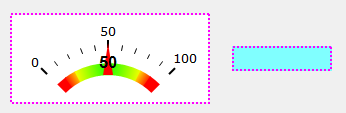
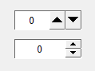
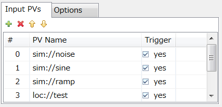
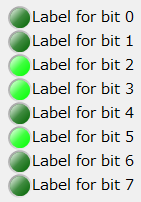

CSS online help->CSS Core->Auto-Complete
(Primarily contributed by ITER).
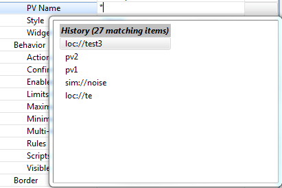
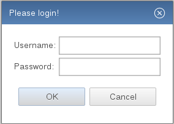
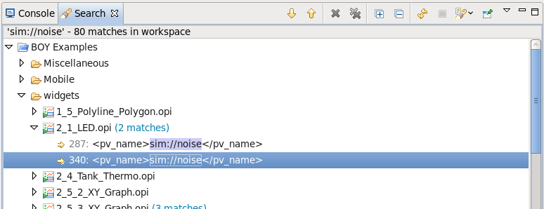
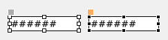
Select Parent (Ctrl+R) context menu to help selecting the parent container. For example, one can
finally select the Display by hitting Ctrl+R multiple times. 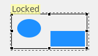
Forward Colors property to Grouping Container widget. If it is yes, it will
forward background and foreground color to its children. This is useful for creating
symbol from multiple graphics widgets shown as below. See Grouping Container Example in BOY Example.

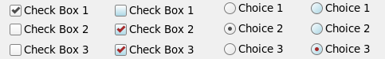
Dump PV List context menu in Runtime to dump all PVs in the OPI including the ones for rules and scripts.

Directory option to file selector on Text Input widget, so it only selects
directory in file dialogStyle property to Action Button widget to have
native buttonStyle property to Text Input widget to have
native text style.Fine Print.


 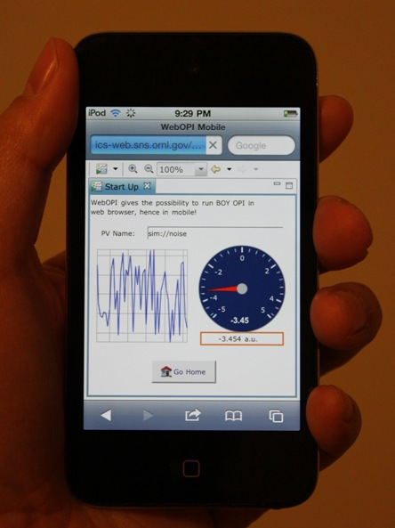
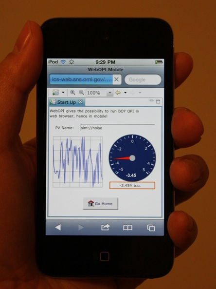


{kind=link}